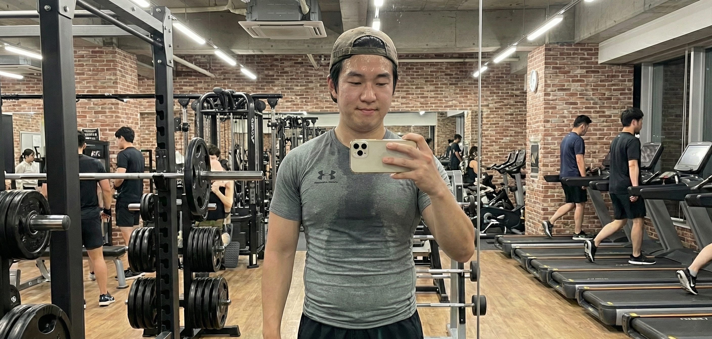
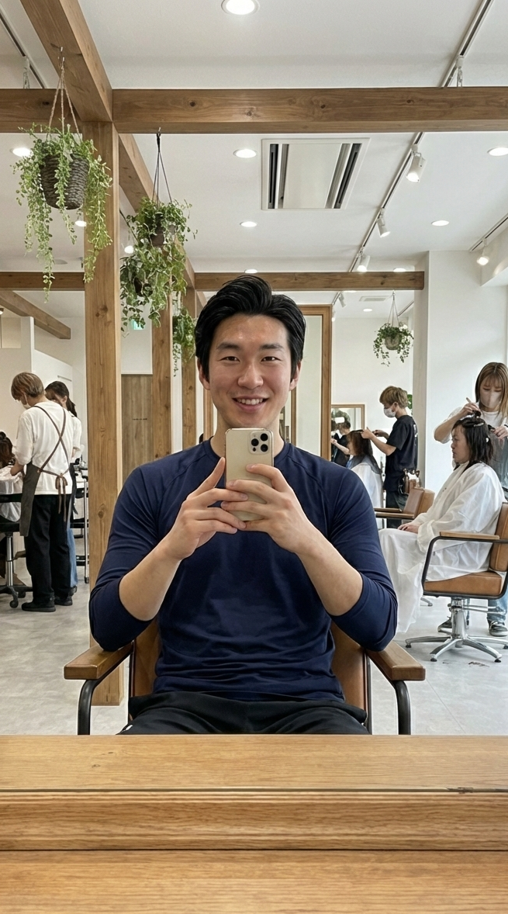

彼女作成計画の第一歩
ジムと美容院に行ってきた。
予約した日から少し緊張していたけど、終わってみると意外とあっさりしていた。
ジムでは久しぶりに体を動かして、思った以上に体力が落ちていることを実感したし、美容院では「こんな感じで」とほぼ丸投げしたら、見慣れない自分が鏡の中にいた。悪くない。
劇的に何かが変わったわけじゃないけど、ちゃんと行動したという事実だけで少し気分がいい。
たぶんこういう小さい積み重ねが、何かを変えていくんだと思う。

